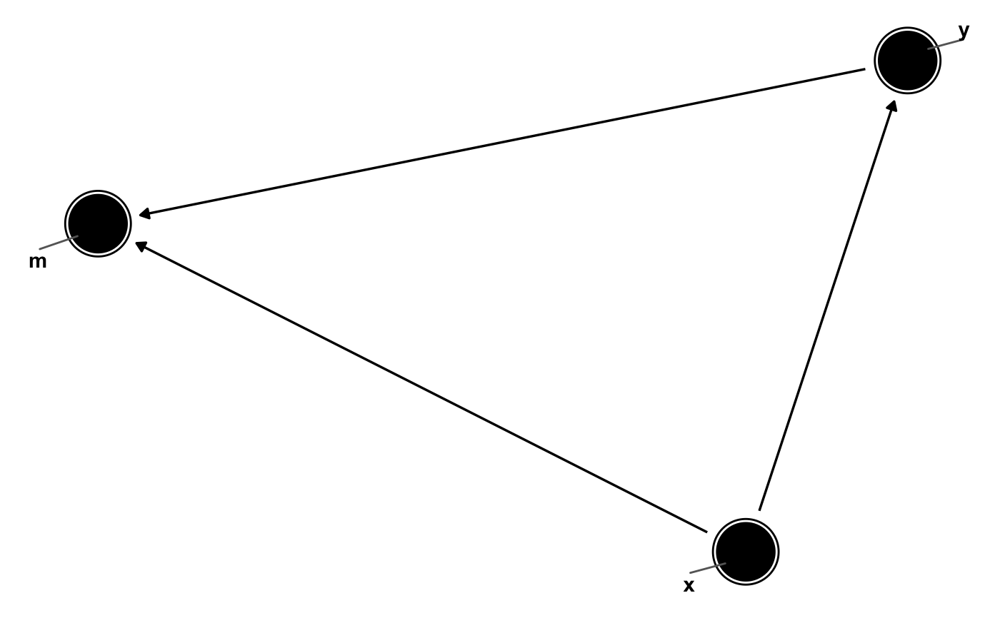
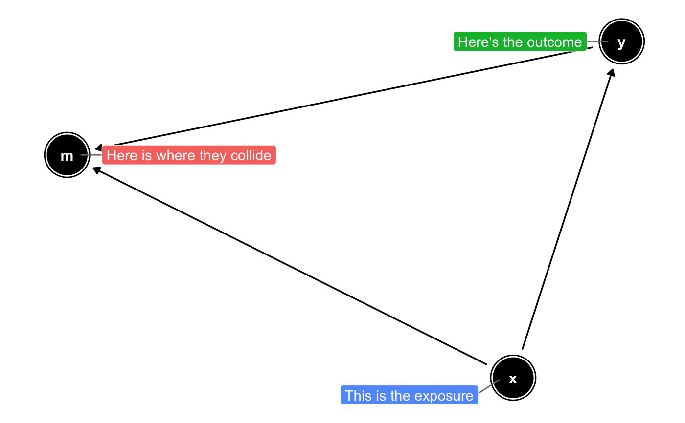

These functions are minor modifications of those in the ggrepel
package. geom_dag_text_repel adds text directly to the plot.
geom_dag_label_repel draws a rectangle underneath the text, making it easier
to read. The text labels repel away from each other and away from the data
points.
geom_dag_text_repel(mapping = NULL, data = NULL, parse = FALSE, ..., box.padding = 0.35, point.padding = 1.5, segment.color = "#666666", fontface = "bold", segment.size = 0.5, arrow = NULL, force = 1, max.iter = 2000, nudge_x = 0, nudge_y = 0, na.rm = FALSE, show.legend = NA, inherit.aes = TRUE) geom_dag_label_repel(mapping = NULL, data = NULL, parse = FALSE, ..., box.padding = grid::unit(0.35, "lines"), label.padding = grid::unit(0.25, "lines"), point.padding = grid::unit(1.5, "lines"), label.r = grid::unit(0.15, "lines"), label.size = 0.25, segment.color = "grey50", segment.size = 0.5, arrow = NULL, force = 1, max.iter = 2000, nudge_x = 0, nudge_y = 0, na.rm = FALSE, show.legend = NA, inherit.aes = TRUE)
| mapping | Set of aesthetic mappings created by |
|---|---|
| data | A data frame. If specified, overrides the default data frame defined at the top level of the plot. |
| parse | If TRUE, the labels will be parsed into expressions and displayed as described in ?plotmath |
| ... | other arguments passed on to
|
| box.padding | Amount of padding around bounding box, as unit or number.
Defaults to 0.25. (Default unit is lines, but other units can be specified
by passing |
| point.padding | Amount of padding around labeled point, as unit or
number. Defaults to 0. (Default unit is lines, but other units can be
specified by passing |
| segment.color | Colour of the line segment. Defaults to the same colour as the text. In the unlikely event you specify both US and UK spellings of colour, the US spelling will take precedence. |
| fontface | A character vector. Default is "bold" |
| segment.size | Width of line segment connecting the data point to the text label, in mm. |
| arrow | specification for arrow heads, as created by |
| force | Force of repulsion between overlapping text labels. Defaults to 1. |
| max.iter | Maximum number of iterations to try to resolve overlaps. Defaults to 2000. |
| nudge_x | Horizontal and vertical adjustments to nudge the starting position of each text label. |
| nudge_y | Horizontal and vertical adjustments to nudge the starting position of each text label. |
| na.rm | If |
| show.legend | logical. Should this layer be included in the legends?
|
| inherit.aes | If |
| label.padding | Amount of padding around label, as unit or number.
Defaults to 0.25. (Default unit is lines, but other units can be specified
by passing |
| label.r | Radius of rounded corners, as unit or number. Defaults
to 0.15. (Default unit is lines, but other units can be specified by
passing |
| label.size | Size of label border, in mm. |
g <- dagify(m ~ x + y, y ~ x, exposure = "x", outcome = "y", latent = "m", labels = c("x" = "Exposure", "y" = "Outcome", "m" = "Collider")) g %>% tidy_dagitty() %>% ggplot(aes(x = x, y = y, xend = xend, yend = yend)) + geom_dag_edges() + geom_dag_node() + geom_dag_text_repel(aes(label = name), show.legend = FALSE) + theme_dag()g %>% tidy_dagitty() %>% dag_label(labels = c("x" = "This is the exposure", "y" = "Here's the outcome", "m" = "Here is where they collide")) %>% ggplot(aes(x = x, y = y, xend = xend, yend = yend)) + geom_dag_edges() + geom_dag_node() + geom_dag_text() + geom_dag_label_repel(aes(label = label, fill = label), col = "white", show.legend = FALSE) + theme_dag()